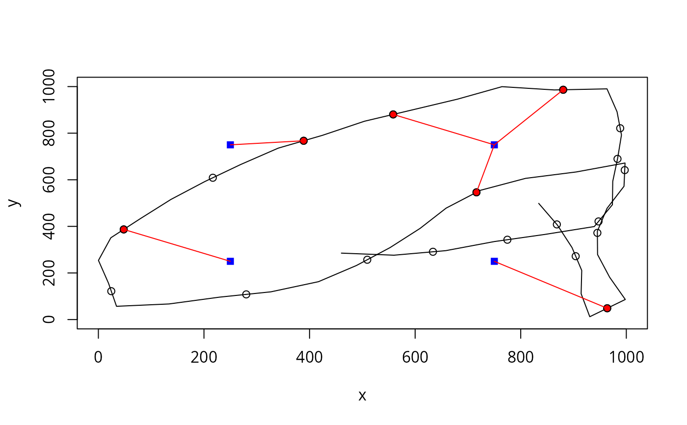
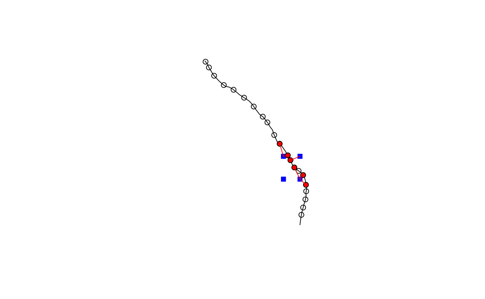

R/sim-detect_transmissions.r
detect_transmissions.RdSimulates detection of transmitter signals in a receiver network based on detection range curve (detection probability as a function of distance), location of transmitter, and location of receivers.
A data frame with location (two numeric columns) and time
(numeric or POSIXct column) of signal transmissions.
OR
An
object of class sf::sf() or sf::sfc() containing
POINT features (geometry column) and time (see colNames).
(sp::SpatialPointsDataFrame() is also allowed.)
A data frame with coordinates (two numeric columns) of receiver
locations.
OR
An object of class sf::sf() or
sf::sfc() containing a POINT feature (geometry column)
for each receiver. (sp::SpatialPointsDataFrame() is also
allowed.)
A function that defines detection range curve; must accept a numeric vector of distances (in meters) and return a numeric vector of detection probabilities at each distance.
A named list containing the names of columns in
trnsLoc with timestamps (default is "time") and coordinates
(defaults are "x" and "y") of signal transmissions. Location
column names are ignored if trnsLoc is a spatial object with a
geometry column.
A named list containing the names of columns in
recLoc with coordinates of receiver locations (defaults are
"x" and "y"). Location column names are ignored if
recLoc is a spatial object with a geometry column.
Defines the coordinate reference system (object of class
crs or numeric EPSG code) if crs is missing from inputs
trnsLoc or recLoc; ignored if input trnsLoc and
recLoc are of class sf, sfc, or
SpatialPointsDataFrame).
Logical. If TRUE (default) then output is an sf object.
If FALSE, then output is a data.frame.
Logical. Progress bar and status messages will be shown if TRUE (default) and not shown if FALSE.
When sp_out = TRUE, an sf object containing one
POINT feature with coordinates of each receiver and transmission
location of each simulated detection (i.e., two geography columns names
rec_geometry and trns_geometry) and the the following
columns:
Unique signal transmission ID.
Unique receiver ID.
Elapsed time.
When sp_out = FALSE, a data.frame with columns
containing coordinates of receiver locations of each simulation detection:
Receiver x coordinate.
Receiver y coordinate.
Transmitter x coordinate at time of transmission.
Transmitter y coordinate at time of transmission.
and the columns described above.
Distances between each signal transmission and receiver are
calculated using geodist::geodist() (measure = "haversine") if input crs is geographic (i.e., longitude, latitude) and
using simple Euclidean distances if input crs is Cartesian (e.g., UTM). If
crs is missing, the an arbitrary Cartesian coordinate system with base unit
of 1 meter is assumed. Computation time is fastest if coordinates are are
in a Cartesian (projected) coordinate system and slowest if coordinates are
in a geographic (long lat) coordinate system.
The probability of detecting each signal on each receiver is determined from the detection range curve. Detection of each signal on each receiver is determined stochastically by draws from a Bernoulli distribution with probability p (detection prob.).
This function was written to be used along with
transmit_along_path().
transmit_along_path() to simulate transmissions along a
path (i.e., create trnsLoc).
# Example 1 - data.frame input (make a simple path in polygon)
mypoly <- data.frame(
x = c(0, 0, 1000, 1000),
y = c(0, 1000, 1000, 0)
)
mypath <- crw_in_polygon(mypoly,
stepLen = 100,
nsteps = 50,
sp_out = FALSE
)
#> Simulating tracks...
#>
|
| | 0%
|
|===== | 8%
|
|======== | 12%
|
|========= | 13%
|
|=========== | 15%
|
|============ | 17%
|
|============= | 19%
|
|=============== | 21%
|
|================ | 23%
|
|================== | 25%
|
|=================== | 27%
|
|==================== | 29%
|
|====================== | 31%
|
|======================== | 35%
|
|============================ | 40%
|
|=============================== | 44%
|
|================================ | 46%
|
|================================== | 48%
|
|=================================== | 50%
|
|==================================== | 52%
|
|====================================== | 54%
|
|======================================= | 56%
|
|======================================== | 58%
|
|=========================================== | 62%
|
|=============================================== | 67%
|
|==================================================== | 75%
|
|====================================================== | 77%
|
|======================================================= | 79%
|
|========================================================= | 81%
|
|========================================================== | 83%
|
|=========================================================== | 85%
|
|============================================================= | 87%
|
|============================================================== | 88%
|
|=============================================================== | 90%
|
|================================================================= | 92%
|
|================================================================== | 94%
|
|===================================================================== | 98%
#> Done.
plot(mypath, type = "l", xlim = c(0, 1000), ylim = c(0, 1000))
# add receivers
recs <- expand.grid(x = c(250, 750), y = c(250, 750))
points(recs, pch = 15, col = "blue")
# simulate tag transmissions
mytrns <- transmit_along_path(mypath,
vel = 2.0, delayRng = c(60, 180),
burstDur = 5.0, sp_out = FALSE
)
points(mytrns, pch = 21) # add to plot
# Define detection range function (to pass as detRngFun)
# that returns detection probability for given distance
# assume logistic form of detection range curve where
# dm = distance in meters
# b = intercept and slope
pdrf <- function(dm, b = c(0.5, -1 / 120)) {
p <- 1 / (1 + exp(-(b[1] + b[2] * dm)))
return(p)
}
pdrf(c(100, 200, 300, 400, 500)) # view detection probs. at some distances
#> [1] 0.41742979 0.23745803 0.11920292 0.05554926 0.02492443
# simulate detection
mydtc <- detect_transmissions(
trnsLoc = mytrns,
recLoc = recs,
detRngFun = pdrf,
sp_out = FALSE
)
#>
|
| | 0%
|
|================== | 25%
|
|=================================== | 50%
|
|==================================================== | 75%
|
|======================================================================| 100%
points(mydtc[, c("trns_x", "trns_y")], pch = 21, bg = "red")
# link transmitter and receiver locations for each detection\
with(mydtc, segments(
x0 = trns_x,
y0 = trns_y,
x1 = rec_x,
y1 = rec_y,
col = "red"
))

# Example 2 - spatial (sf) input
data(great_lakes_polygon)
set.seed(610)
mypath <- crw_in_polygon(great_lakes_polygon,
stepLen = 100,
initPos = c(-83.7, 43.8),
initHeading = 0,
nsteps = 50,
cartesianCRS = 3175
)
#> Simulating tracks...
#>
|
| | 0%
|
|===================================================================== | 98%
#> Done.
plot(sf::st_geometry(mypath), type = "l")
# add receivers
recs <- expand.grid(
x = c(-83.705, -83.70),
y = c(43.810, 43.815)
)
points(recs, pch = 15, col = "blue")
# simulate tag transmissions
mytrns <- transmit_along_path(mypath,
vel = 2.0, delayRng = c(60, 180),
burstDur = 5.0
)
points(sf::st_coordinates(mytrns), pch = 21) # add to plot
# Define detection range function (to pass as detRngFun)
# that returns detection probability for given distance
# assume logistic form of detection range curve where
# dm = distance in meters
# b = intercept and slope
pdrf <- function(dm, b = c(2, -1 / 120)) {
p <- 1 / (1 + exp(-(b[1] + b[2] * dm)))
return(p)
}
pdrf(c(100, 200, 300, 400, 500)) # view detection probs. at some distances
#> [1] 0.7625420 0.5825702 0.3775407 0.2086085 0.1027840
# simulate detection
mydtc <- detect_transmissions(
trnsLoc = mytrns,
recLoc = recs,
detRngFun = pdrf
)
#>
|
| | 0%
|
|================== | 25%
|
|=================================== | 50%
|
|==================================================== | 75%
|
|======================================================================| 100%
# view transmissions that were detected
sf::st_geometry(mydtc) <- "trns_geometry"
points(sf::st_coordinates(mydtc$trns_geometry), pch = 21, bg = "red")
# link transmitter and receiver locations for each detection
segments(
x0 = sf::st_coordinates(mydtc$trns_geometry)[, "X"],
y0 = sf::st_coordinates(mydtc$trns_geometry)[, "Y"],
x1 = sf::st_coordinates(mydtc$rec_geometry)[, "X"],
y1 = sf::st_coordinates(mydtc$rec_geometry)[, "Y"],
col = "red"
)
